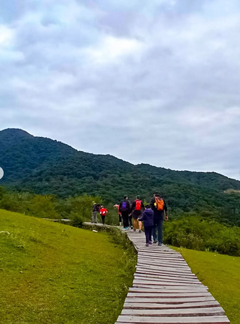
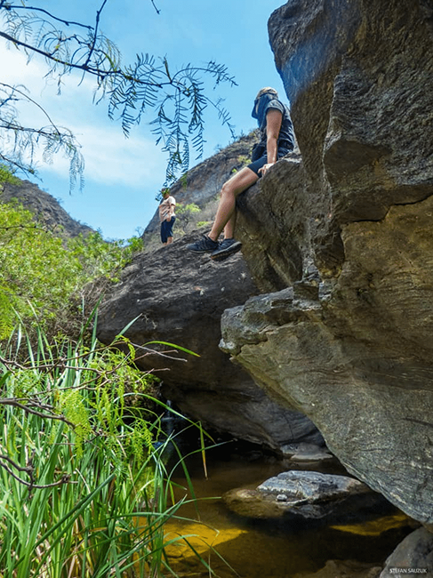
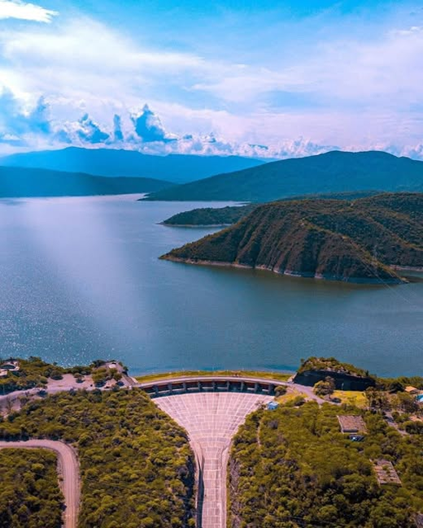

Tips para recorrer los cerros de Salta
Subir a los cerros no es solo una caminata, es una experiencia que conecta con la naturaleza, la historia y los paisajes únicos de nuestra provincia. Aquí te compartimos consejos y recomendaciones para que tu aventura sea inolvidable.



Tips Generales para tu Viaje a Salta
Equipaje Esencial
Lleva ropa cómoda, protector solar, repelente de insectos y una botella reutilizable.
Seguridad
Informate sobre las condiciones climáticas y respeta las normas de los parques naturales.
Alimentación
Prueba la comida local: humitas, tamales y vinos de la región. ¡Deliciosos!